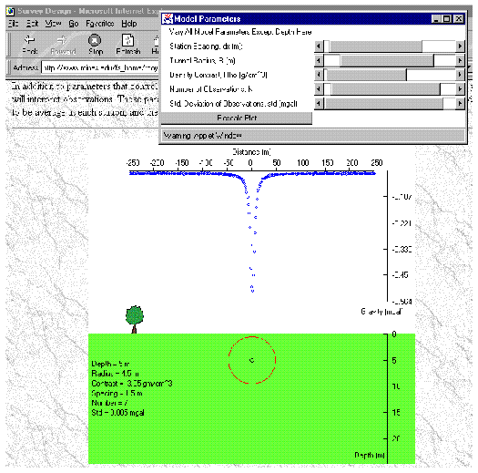

<p>
    Figure 4. Survey design and data modeling are accomplished through the use of Java-based
    applets that most browsers can interpret without additional software. This example shows the
    forward-modeling applet used to design a gravity survey to find tunnels. Students
    use this applet to design the most cost-effective gravity survey that will detect tunnels of
    interest to the client. The user can interactively vary tunnel depth, radius, and density
    contrast and immediately see the resulting gravity anomaly. In addition, the user can
    control all survey design parameters such as station spacing, reading error, and number of
    readings to collect at each station.
</p>